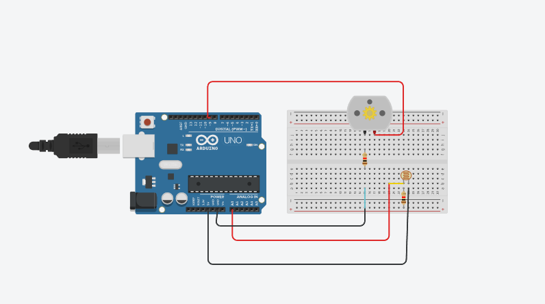

LDR-Based Automatic Fan Control
Overview
This project automatically turns ON a fan when there is bright light and turns it OFF when it’s dark using an LDR and a relay or transistor circuit.
Circuit Diagram

Arduino Code
const int LDR_PIN = A0; // LDR connected to Analog Pin A0
const int FAN_PIN = 9; // Relay Module or Transistor connected to Pin 9
int threshold = 500; // Adjust this based on your environment
void setup() {
pinMode(FAN_PIN, OUTPUT);
Serial.begin(9600); // Initialize Serial Monitor
}
void loop() {
int ldrValue = analogRead(LDR_PIN); // Read LDR sensor value
Serial.print("LDR Value: ");
Serial.println(ldrValue); // Print to Serial Monitor
if (ldrValue > threshold) { // If bright light
digitalWrite(FAN_PIN, HIGH); // Turn ON Fan
Serial.println("Fan ON");
} else { // If darkness
digitalWrite(FAN_PIN, LOW); // Turn OFF Fan
Serial.println("Fan OFF");
}
delay(500); // Small delay for stability
}
Working Principle
The LDR senses light intensity. When brightness exceeds the set threshold, the fan turns ON. When light drops below the threshold, the fan turns OFF automatically.